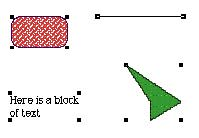

|
|
Selections in GraphicsSeveral conventions exist for selecting graphic objects and giving selection feedback. This section describes two ways to show selection feedback. Other situations may require other solutions.An object-based graphics document is a collection of individual graphic objects. To select one of these objects, the user clicks the object once, which is then bracketed with "handles." (The user can stretch or shrink the object with the handles.) Figure 10-22 shows the selection handles around graphic objects. Figure 10-22 Selection in an object-based graphics document  In object-based graphics applications, there are two
ways to select more A bitmap-based graphics document, in contrast, is a series of pixels--not discrete objects. Selections are shown surrounded by a moving dashed line, which is sometimes called a marquee or marching ants. Figure 10-23 shows a selection marquee. |